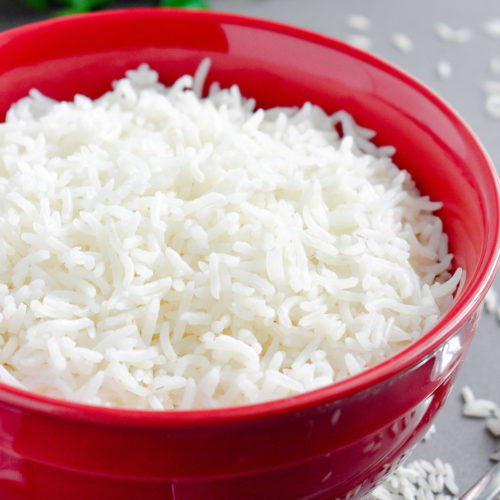

White rice

Note: this recipe is taken from the following:
Basic White Rice Recipe (Spruce Eats)
Description
White rice is easy to make, and a perfect blank canvas to
add other delicacies of your choice to. Hence, I've included
it in this set of recipes.
Ingredients
- 1 cup long grain white rice
- 2 cups water
- 1/2 teaspoon salt
Preparation
- Rise the rice in cold water.
- Bring the water to a boil.
- Add the butter and salt, then stir.
- Add the rice. Stir.
- Reduce heat to low, cover, and let simmer for 20 minutes. Check after 15
minutes if water has evaporated; if so, the rice is ready. If not, then cover
again and let simmer for five more minutes.
- Remove from heat and fluff with a fork. Garnish with
butter and parsley, if desired.
Back to Odin Recipes